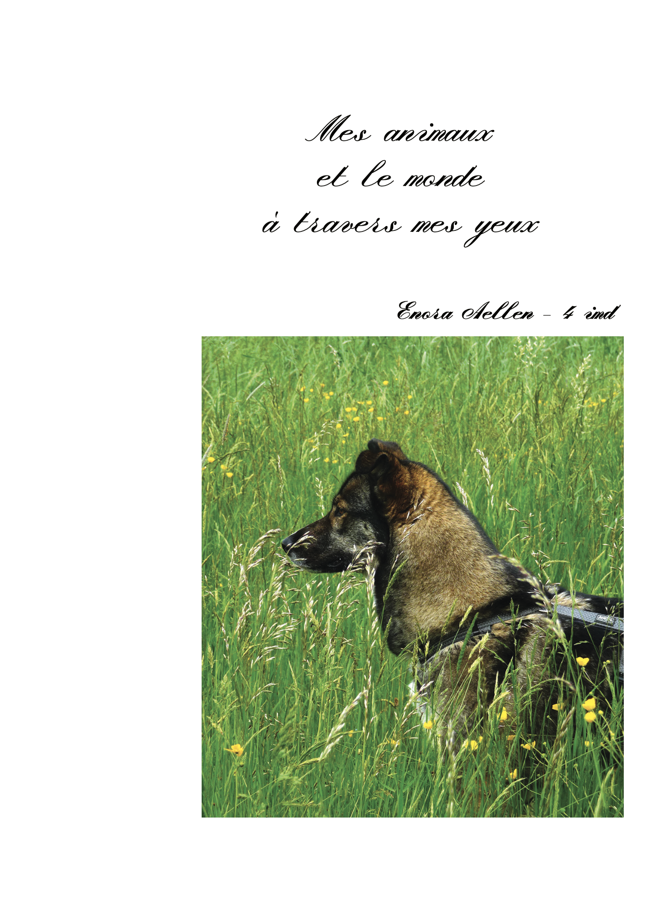
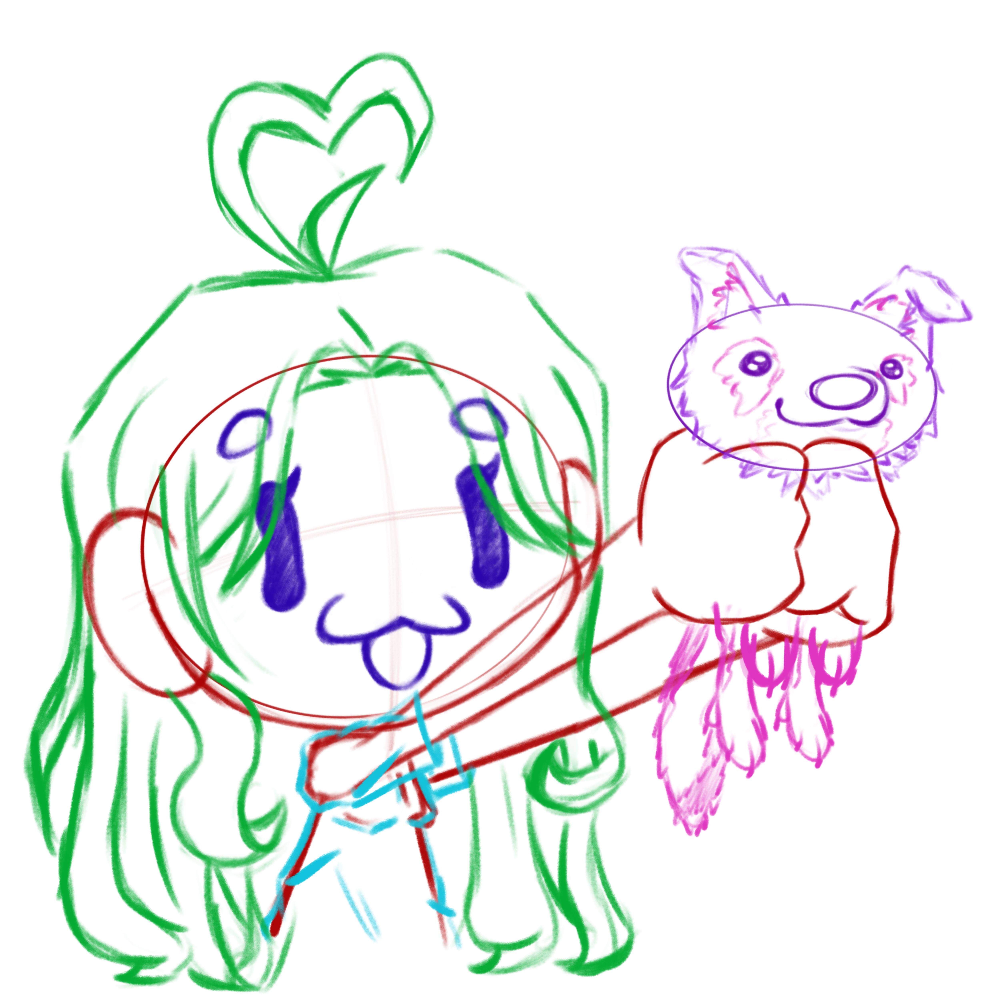

Journal photo
11/09/2025
Photo/Design
Le but ? Créer un journal photo qui résume notre été avec un sujet personnelle qu’on choisi et ensuite créer une composition pour pouvoir présenter nos photos dans un journal à imprimer par nos soins.
Infos pratiques
Ce projet nous a été lancé durant la fin de la 3ème, les élèves ayant un stage devait réaliser un rapport de stage alors que les autres élèves devait partager leurs vacances. Le projet à été rendu en début d’année de 4ème année et créer sur InDesign.
Pourquoi ?
N'ayant pas eu de stage, je devais créer un journal photo avec un thème et une approche systématique. Ce n'était pas facile de trouver le sujet de mon journal. Après de nombreuses discussions avec ma professeure, nous avons conclu que mon sujet serait ma chienne Tinka et que le thème serait le deuil, puisque quelques semaines avant, j'avais perdu une autre chienne, Plumme.
Ce journal deviendrait un recueil documentant comment je vis mon deuil auprès de Tinka et comment nous évoluons ensemble. À travers les photographies, j'ai voulu capturer nos moments partagés et montrer comment, malgré la perte, la vie continue et se transforme.
Réalisation
Pour réaliser ce projet ce n'était pas de tout repos !
1.
Pour sa réalisation, je prenais des photos quotidiennement de ma chienne. Dans le journal, je regroupais les événements par semaine pour créer une narration linéaire et une timeline facile à suivre.
2.
J'ai pris la liberté d'introduire mes autres animaux dans le journal, pour montrer que j'ai toujours vécu auprès des animaux et qu'ils sont bien plus qu'un simple animal pour moi. Ils représentaient une continuité dans mon histoire personnelle.
3.
J'ai imprimé le journal dans un format intermédiaire entre A5 et A4, ce qui lui donne une allure de journal intime. Cette taille intimiste renforçait le caractère personnel et confidentiel du projet.
4.
Au moment de l'impression, j'ai vérifié attentivement avec l'imprimeur que mon fichier était correct avec sans erreur et c'était le cas ! Cette étape finale m'a permis de m'assurer que le résultat correspondait exactement à ma vision.
Au finale ?
Au début du projet, j'étais réticente à explorer le thème que ma professeure m'a proposé.
Je n'avais pas envie de me centrer sur moi-même et sur ma souffrance personnelle. Mais à la fin, j'ai été soulagée d'avoir eu un support où je pouvais me confier, exprimer mes pensées et ce que je ressentais profondément.
Je suis vraiment contente d'avoir choisi ce thème plutôt qu'un autre.
Au-delà de la création du journal lui-même, ce projet m'a permis de me prouver que je pouvais créer de bonnes mises en page sur InDesign. J'ai appris à équilibrer les textes, les images et les espaces blancs de manière cohérente, ce qui a renforcé ma confiance en mes capacités de designer.
Finalement, ce projet a été bien plus qu'un simple travail scolaire : c'était un véritable voyage personnel où la création visuelle m'a aidée à traiter mon deuil et à célébrer la présence de Tinka dans ma vie.
Je retiens quoi ?
De grande leçon.
L’appréhension
Appréhender quelque chose n'est pas nécessairement mauvais, mais j'ai compris que ça me bloquait beaucoup dans mon travail. J'ai réalisé qu'il faut que je rationalise mes peurs, surtout pour les projets personnels qui me demandent de me surpasser.
L’amour de la photographie
Je pensais que la vidéo était mon domaine de prédilection depuis mon arrivée à l'école, mais finalement, j'aime énormément faire de la photographie. J'adore chercher la composition parfaite et retoucher les images si besoin. Avoir ma chienne Tinka comme sujet ne pouvait que me rendre encore plus amoureuse de cet art.
La mise en page
La mise en page a toujours été quelque chose dont je ne savais pas dépasser la base classique. Là, je me suis challengée pour créer une mise en page qui sort de l'ordinaire, qui ne ressemble pas à ce qu'on voit constamment.
L'impression chez l'imprimeur
Même si ce n'était pas ma première fois chez un imprimeur, c'était la première fois que j'allais chez quelqu'un que je ne connaissais pas. J'avais peur que mon fichier soit rempli d'erreurs ou en RVB au lieu de CMJN, mais finalement, mon fichier était impeccable ! L'imprimeur était très content et m'a même félicitée.
conclusion

- Tout sujet est un sujet intéressant.
- Le physique est un magnifique souvenir.
- La peur est une des pires ennemies pour les créatifs.
- L’habitude de tout prendre en photo, check ✓.